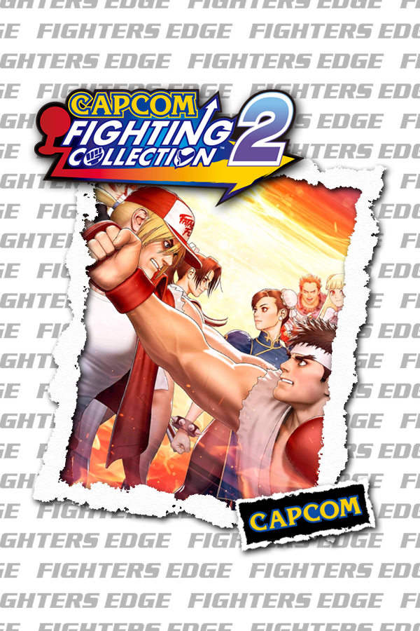

Capcom Fighting Collection 2
Every archived year-end list appearance, including placement and points earned.
About the Game
Capcom's new fighting collection hits the stage! Choose from fan-favorite games like Capcom vs. SNK 2: Mark of the Millennium 2001 and Project Justice to 3D action games like Power Stone and Power Stone 2 in this collection of eight classic fighting games! Each game in the collection can be played online or co-op! Get back in the ring and duke it out in battles that everyone rumored, but no one believed! Whether it's with a rival new or old, give it your all and strive for victory! - Smooth Online Play! Compete in heated ranked battles or play for fun in casual matches. Create a lobby with friends and battle head-to-head, play co-op, or spectate other matches. However you choose to play, rollback netcode makes the experience smooth and fun! A High Score Challenge mode is also available. Aim for the top of the global leaderboards! - No Experience? No Problem! This collection boasts a number of beginner-friendly features such as adjustable difficulty levels, One Button Specials, and training modes. Plus, players can save and load their progress almost anywhere and pick up right where they left off. - Additional Features! Players can view more than 700 pieces of artwork from all 8 titles along with never-before-seen development documents used to make the original games. The Music feature contains over 300 tracks from the original arcade games that players can listen to at any time! - Included Games Capcom vs. SNK: Millennium Fight 2000 Pro Capcom vs. SNK 2: Mark of the Millennium 2001 Capcom Fighting Evolution Street Fighter Alpha 3 UPPER Power Stone Power Stone 2 Project Justice Plasma Sword: Nightmare of Bilstein
| Released | 2025-05-15 |
|---|---|
| Developer | Capcom |
| Publisher | Capcom |
| Genres | Action |
| Platforms | PC |
SingleplayerSteam AchievementsMultiplayerFull controller supportSteam CloudCo-opcooperativeOnline Co-OpSplit ScreenLocal Co-OpPixel GraphicsLocal Multiplayer
Where to Buy
Game information provided by RAWG.
Points by Year
List History
| Year | Source | List | Placement | Points |
|---|---|---|---|---|
| 2025 | GameSpot | The Best Games Of 2025 | Unranked | 1 |